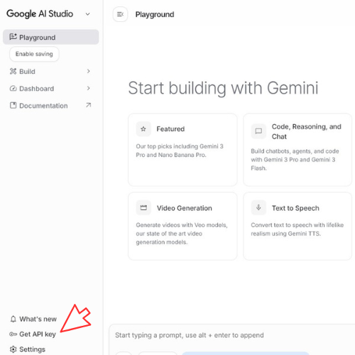
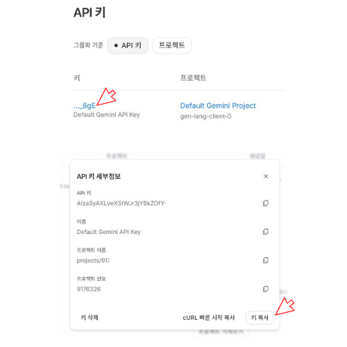

Gemini API를 사용하기 위해 무료로 API 키를 발급받는 과정입니다. 그림을 보고 순서대로 따라해 주세요.
Google AI Studio 바로가기위 버튼을 눌러 사이트에 접속한 후, 본인의 구글 계정으로 로그인합니다.
화면 왼쪽 사이드바 하단에서 $GET_API_KEY_BTN$ 메뉴를 클릭합니다.

목록에 기본으로 생성되어 있는 파란색 글씨의 API 키(예: ..._8gE)를 클릭합니다.
* 만약 목록이 비어있다면, 상단의 $CREATE_API_KEY_BTN$ 버튼을 눌러 새로 만들어주세요.
API 키 세부정보 창이 나타나면, 우측 하단의 $COPY_BTN$ 버튼을 눌러 완료합니다.

API 키는 개인 비밀번호와 같습니다. 타인에게 공유하거나 깃허브(GitHub) 등 공개된 장소에 올리지 않도록 주의해 주세요.